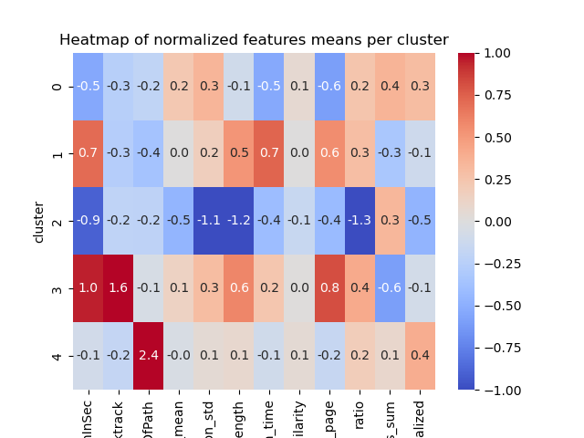
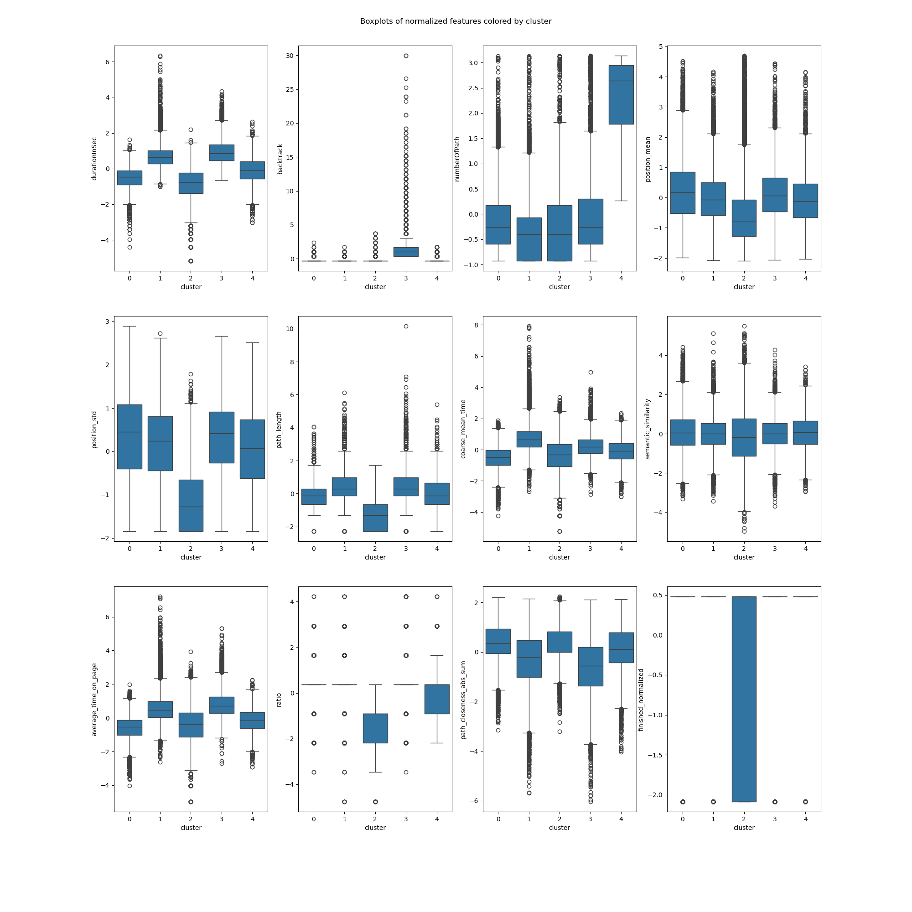
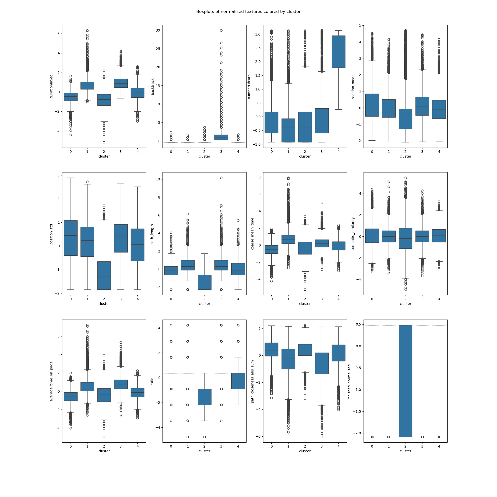

To describe in-game behaviours, we extracted several features.
Let's start with the most intuitive ones!
-
The duration in seconds
This is the time taken by the player to complete the path. This feature was directly provided by the dataset.

-
The number of backtracks
This feature is the number of backtracks made by the player during the path. It can be used to inform us on how the player navigated its way from the starting page, and whether his path was straightforward or more meandering.

-
The number of paths attempted by the player before the one played
This feature informs us how much training the player had before he played the path recorded. It is negatively correlated with the time taken to finish the path recorded, even though ~50% of the IP addresses appear only 1 time (heavily right-skewed distribution).

-
The path length
Simple measure of number of edges in path (pages clicked on) from beginning to end. Does not contains player backtracks, and so counts the final version of player path.

-
The average time per edge
Measure of amount of time, on average, that the player took to travel from one edge to another in the path. The presence of outliers in this datapoints may give indicators of any trouble the players might have had.

-
The ratio between the user path length and the shortest path length
This feature is the ratio between the length of the path taken by the player and the length of the shortest path between the start and end articles. This feature gives us a measure of how well the players perform.

But one can also think of more clever and more sophisticated features!
-
The mean position of following clicked link
Character position of succeding clicked link on article page, averaged across all edges of path. This feature brings insight into whether players scroll to find a word that popped into their heads, or let their search be guided by the options under their sight, that is the first links visible on the article.

-
The standard deviation of the position of following clicked link
This feature is the standard deviation of character position of succeding clicked link within a path. It allows to measure how much players change their position mean within paths.

-
The path closeness absolute sum
As each page in the path has a closeness centrality associated to it from the full network of Wikipedia, this features is obtained by looking at the derivative of the closeness centrality of each page in the path and summing the absolute value of these deltas before and after the maximal degree page in the path. This is meant to quantify if the player is strongly looking for a hub page in the path, reaches it (as the maximal degree page is assumed to be a hub page) and then goes to a specific page from there, i.e. the target page. Indeed, a good player is expected to have a strongly positive delta before the maximal degree page and a strongly negative delta after it. We take the absolute value then sum them to have a single feature that aims at quantifying this behavior.

-
The semantic similarity metric
This is a measure of the average similarity between two successive terms in the given path. The feature is calculated by computing the cosine similarity (normalised dot product) between embeddings (one-hot vectors projected to a lower dimensionality subspace) given by a sentence transformer, which is a model specifically trained in order to give embeddings which have "semantically relevant" / "semantically informative" relative positions. As such, the cosine similarity gives a measure of logical similarity of the words. A value of -1 represents opposite meanings / topics, around 0 means unrelated, and around 1 means highly similar meanings / topics. The mean of this is supposed to approximately capture how related topics globally were on a given path.

Once features have been extracted, it’s time for clustering. We performed clustering to validate that we achieve a meaningful set of latent variables for player paths,
in addition to being able to classify each type of player.
We tested many clustering techniques and chose the Leiden clustering method, which works best for our data.
The Leiden algorithm is a clustering method that is an improved version of the Louvain algorithm.
It aims to identify cohesive groups or clusters within a larger network
by optimizing the network's modularity, which measures the strength of division into communities.
The Leiden algorithm computes a clustering on a KNN graph obtained from the PC reduced expression space. It starts by assigning each node in the network to its own cluster,
which forms the initial partition. It then iterates through each node, considering moving it to a neighbouring cluster to see if it improves the network's modularity.
This process continues until no further improvements can be made, resulting in a refined partition of the network where nodes in the same cluster are more connected to each
other than to nodes in other clusters.
Leiden creates clusters by considering the number of links between nodes in a cluster versus the overall expected number of links in the dataset.
nature.com
The following heatmap shows the clustering results, with columns representing features and rows for each of the 5 clusters. The values and colours represent the variation from the mean for each feature of each cluster.
The semantic similarity feature doesn’t seem to vary too much across clusters. This can be interpreted in the following way: the performance and strategies of the players do not depend too much on the semantic meaning of the articles in their path. Simply put, the words and their meaning are more or less alike independently of their clusters.
Right away we notice some clusters are very distinct.
For others, it’s less clear.
Let’s dive in cluster by cluster, shall we?!
The clusters
The slow ones
The players contained in cluster 0 are very slow (with the second biggest durationInSec value among all clusters, 0.4, and the worst coarse_mean_time value, 0.5).
They do not backtrack, click links fairly low in the article (with the biggest position_mean feature mean across all clusters) but this varies (position_std = 0.5).
This habit of searching for links further down on the article page might in part explain the slowness of these players.
They also have a high ratio, one that is amongst the worst (ratio = 0.4).
The bosses
The players contained in cluster 1 are very fast (durationInSec = -0.8), they click on fairly high-position links most times (position_mean = -0.3 and position_std = -0.8)
Their path length and ratio are top of the list, with path_length = -1.1 and ratio = -1.2.
This seemed suspicious at first: we thought their low ratio was due to them not finishing most of their games and therefore creating unrealistically short paths.
This however is not such a prominent bias, as the unfinished portion of games in this cluster is actually only of 1/3.
Moreover, the path_closeness_abs_sum feature confirms that this cluster's players play very well: they reach hubs fast, with a path_closeness_abs_sum of 0.4, and the biggest one among clusters.
Overall this cluster seems to contain either the "boss" players, or players that try one game quickly and don't finish it.
The cautious ones
The players contained in cluster 2 are fast (durationInSec = -0.5, coarse_mean_time = -0.7), they do not backtrack,
and click on early links (position_mean = -0.5) most times (position_std = -0.4).
They finish most times (finished_normalized = 0.3) but do not do so with a good ratio (ratio = 0.3), and they do not have a high path_closeness_abs_sum.
When looking closer at samples from this cluster, they seem to at first reach hubs fast but then to slowly and cautiously go back down (which explains the low path_closeness_abs_sum), most likely to be sure to reach their target.
Players from cluster 2 have a good intuition but are afraid to get lost.
The lost ones
The players contained in cluster 3 are very slow overall (durationInSec = 0.9), but not so much on the average time they spend on a page (coarse_mean_time = 0.2).
This is explained by the fact that they backtrack VERY frequently (backtrack = 1.5).
They also have the longest paths (path_length = 0.6), and this is not due to the backtrack as path _length is computed without considering backtracks.
This shows how backtracking isn't necessarly going to improve player performance.
Players here also do not reach hubs easily, with the worst path_closeness_abs_sum value, -0.6; and they have an overall poor ratio (ratio = 0.4).
All in all, these players seem to have good intentious and to be meticoulous in their search of the next path, but without success. They just end up getting lost.
The experienced ones
The players contained in cluster 4 are fairly fast (durationInSec = -0.2), and do not backtrack much (backtrack = -0.2).
They have played a lot of games before (numberOfPath = 2.2), and finish a big portion of their games (with the biggest finished_normalized value across clusters, 0.4).
They perform fairly, but not extraordinarily well (ratio = 0.2 and path_closeness_abs_sum = 0.1).
They simply are experienced and able to easily finish their game.
The figure below shows the number of paths or datapoints in each cluster. As we can see, there are few experienced players (cluster 4), and many slow players (cluster 1). On an interesting note, the 'Boss' cluster (cluster 1) is quite large. However, this may again be explained by the fact this cluster might contain unfinished games of players who quickly tried Wkikspeedia.

Additionally, the two following figures show the distributions and boxplot of each feature coloured for each cluster. The information here is the same as discussed previously, but visualized in a different way.
 

Let's see, with a concrete example, how the differences between clusters affect the way players achieve the same goal. In the following table, players from different cluster are able to go from Google to God... but with very diverse strategies! As we can see, cluster 0 players indeed take fairly meandering paths, with very researched but not very efficient links. Cluster 1 players are simply the best. Cluster 2 players finds a version of the right path very quickly but goes back down slowly. Finally, the cluster 3 players are completely lost, and constantly go back and forth; while cluster 4 players are visibly experimented.
| Path | Cluster |
|---|---|
| Google > California > Arnold_Schwarzenegger > George_W._Bush > Religion > God | 0 |
| Google > Fiction > Greek_mythology > Deity > God | 0 |
| Google > Internet > Tim_Berners-Lee > Elizabeth_II_of_the_United_Kingdom > British_monarchy > Roman_Catholic_Church > God | 0 |
| Google > United_States > Judaism > Names_of_God_in_Judaism > God | 0 |
| Google > United_States > Judaism > Christianity > Jesus > God | 0 |
| Google > Germany > Atheism > God | 1 |
| Google > Fiction > Religion > God | 1 |
| Google > Fiction > Religion > Christianity > Jesus > Bible > Names_of_God_in_Judaism > God | 2 |
| Google > United_States > backtrack > United_States > Manifest_Destiny > backtrack > United_States_Declaration_of_Independence > backtrack > Latin > Rome > backtrack > Roman_Catholic_Church > God | 3 |
| Google > United_States > Judaism > Names_of_God_in_Judaism > God | 4 |
| Google > United_States > Islam > God | 4 |
In these results all timed-out games were removed. What happens if we leave them in? Well, as shown by the figure below, a 6th cluster is created.

By digging a little deeper, we notice that leaving them in simply created an additional cluster with nearly all timed-out games. This makes sense many of our features depend on time, and so games with a time-out will be very different from other games in terms of time and will therefore form a separate cluster.

Validation
In order to check the Leiden clustering's robustness, we used 5-fold cross-validation. Due to the clusters not having a fixed ID across runs, we performed matching using the clustroids nearest to those in a given fold across other folds. Once this is done, we can plot the original clustroids and their nearest neighbors across folds, and see how close they are in the UMAP embedding space. From the following plot, we see they are quite close to each other !
Thank you for reading our datastory!